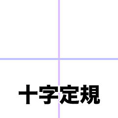

深入理解内联元素的高度表现 在讲解原理之前，我们先看以下代码: 复制代码console.log(document.querySelector('p').clientHeight); // 输出36px 复制代码现在我们思考这样几个问题: 元素的高度从何而来？ 是由里面的文字撑开的？ 作者：阳光。 链接：https://juejin.cn/post/6844903910382010382 来源：稀土掘金 著作权归作者所有。商业转载请联系作者获得授权，非商业转载请注明出处。